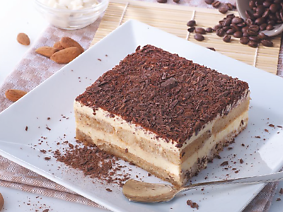

tiramisu
ingrediënten
- 125 ml verse slagroom
- 75 g basterdsuiker
- 4 grote eieren
- 500 g mascapone
- 5 el koffielikeur
- 200 ml espressokoffie
- 175 g lange vingers
- 1 el cacaopoeder
- schaal (20cm x 25cm
Bereidingswijze
- Klop de slagroom met ⅕ van de basterdsuiker in een ruime kom met een mixer bijna stijf.
- Maak de gardes van de mixer schoon. Splits de eieren (de eiwitten worden niet gebruikt).
- Klop in een andere kom de eidooiers met de rest van de suiker in 5 min. tot een lichtgele, romige crème.
- Meng de mascarpone in delen door de crème en spatel vervolgens de slagroom erdoor.
- Schenk de koffielikeur samen met de espresso in een laag schaaltje of diep bord.
- Doop de helft van de lange vingers in dit mengsel en bedek de bodem van de schaal ermee. Verdeel de helft van mascarponemengsel erover.
- Doop de rest van de lange vingers in het koffiemengsel en verdeel over het mascarponemengsel. Verdeel de rest van het mascarponemengsel erover.
- Laat de tiramisu afgedekt minimaal 2 uur opstijven in de koelkast. Neem vlak voor het serveren uit de koelkast. Strooi met een zeefje de cacaopoeder over de tiramisu.

Bewaartip:
Je kunt de tiramisu maximaal 1 dag van tevoren bereiden. Bewaar tot gebruik afgedekt in de koelkast.
Variatietip:
Liever geen alcohol? Gebruik dan in plaats van koffielikeur karamelsiroop (fles 250 ml, Monin).